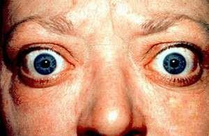

Part III · Thyroid eye disease
Thyrotoxic exophthalmos (Graves’ disease)
It occurs in patients with hyperthyroidism and is more common in middle aged females.
Clinical picture — symptoms
- General: nervousness, irritability, heat intolerance, palpitation and weight loss.
- Local: ocular discomfort, cosmetic complaint and/or diplopia.
Signs
- General: enlarged thyroid gland, increased pulse rate, tremors.
- Local:
- Soft tissue involvement: edema and congestion of the lid and conjunctiva.
- Lid retraction: leading to staring look, infrequent blinking and lid lag (retarded descent of the upper lid in down gaze).
- Proptosis: axial, unilateral or bilateral.
- Restrictive myopathy: limited ocular motility (due to swelling of the muscles up to 8 times its normal size and later due to fibrosis), leading to diplopia.
- Optic neuropathy: due to compression by the enlarged muscles.
